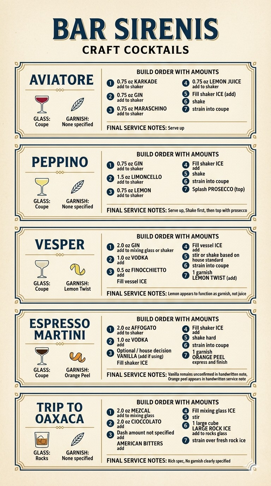
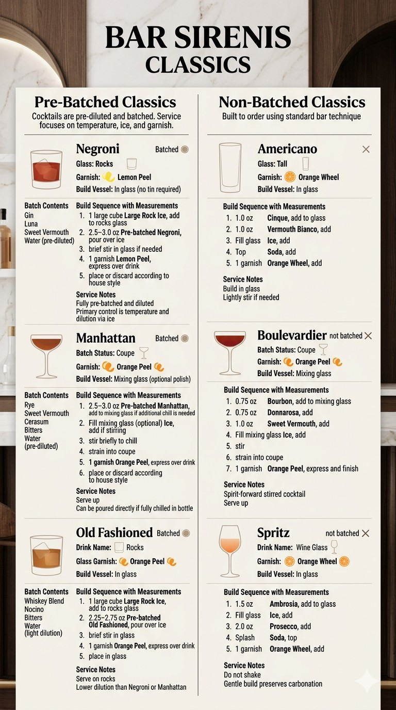

Bar Sirenis
Classics — Bartender Build Reference
Pre-Batched Classics
Negroni
🍸 Rocks | 🍋 Lemon Peel | Vessel: In Glass
- 🧊 Add large rock ice (1 cube)
- 🥃 Pour Negroni Batch (2.5–3.0 oz)
- 🥄 Brief stir
- 💨 Express lemon peel (1)
- 🍋 Place or discard peel
Manhattan
🍸 Coupe | 🍊 Orange Peel | Vessel: Mixing Glass
- 🥃 Add Manhattan Batch (2.5–3.0 oz)
- 🧊 Add ice (if stirring)
- 🥄 Stir briefly
- 🔽 Strain into coupe
- 💨 Express orange peel (1)
- 🍊 Finish garnish
Old Fashioned
🍸 Rocks | 🍊 Orange Peel | Vessel: In Glass
- 🧊 Add large rock ice (1 cube)
- 🥃 Pour Old Fashioned Batch (2.25–2.75 oz)
- 🥄 Brief stir
- 💨 Express orange peel (1)
- 🍊 Place peel in glass
Non-Batched Classics
Americano
🍸 Tall | 🍊 Orange Wheel | Vessel: In Glass
- 🥃 Add Cinque (1.0 oz)
- 🥃 Add Vermouth Bianco (1.0 oz)
- 🧊 Add ice (fill)
- ⬆️ Top with soda
- 🍊 Add orange wheel (1)
Boulevardier
🍸 Coupe | 🍊 Orange Peel | Vessel: Mixing Glass
- 🥃 Add Bourbon (0.75 oz)
- 🥃 Add Donnarosa (0.75 oz)
- 🥃 Add Sweet Vermouth (1.0 oz)
- 🧊 Add ice (fill)
- 🥄 Stir
- 🔽 Strain into coupe
- 💨 Express orange peel (1)
Spritz
🍸 Wine Glass | 🍊 Orange Wheel | Vessel: In Glass
- 🥃 Add Ambrosia (1.5 oz)
- 🧊 Add ice (fill)
- 🥃 Add Prosecco (2.0 oz)
- ⬆️ Top with soda (splash)
- 🍊 Add orange wheel (1)
Bar Sirenis Craft Cocktails
Aviatore
🍸 Coupe | No garnish specified | Vessel: Shaker
- 🥃 Add Karkade (0.75 oz)
- 🥃 Add Gin (0.75 oz)
- 🥃 Add Maraschino (0.75 oz)
- 🥃 Add Lemon Juice (0.75 oz)
- 🧊 Add ice
- 🤝 Shake
- 🔽 Strain into coupe
Peppino
🍸 Coupe | No garnish specified | Vessel: Shaker
- 🥃 Add Gin (0.75 oz)
- 🥃 Add Limoncello (1.5 oz)
- 🥃 Add Lemon (0.75 oz)
- 🧊 Add ice
- 🤝 Shake
- 🔽 Strain into coupe
- ⬆️ Top with Prosecco (splash)
Vesper
🍸 Coupe | 🍋 Lemon Twist | Vessel: Mixing Glass or Shaker
- 🥃 Add Gin (2.0 oz)
- 🥃 Add Vodka (1.0 oz)
- 🥃 Add Finocchietto (0.5 oz)
- 🧊 Add ice
- 🥄 Stir or 🤝 shake per house standard
- 🔽 Strain into coupe
- 🍋 Add lemon twist (1)
Espresso Martini
🍸 Coupe | 🍊 Orange Peel | Vessel: Shaker
- 🥃 Add Affogato (2.0 oz)
- 🥃 Add Vodka (1.0 oz)
- 🥃 Add Vanilla (optional / house decision)
- 🧊 Add ice
- 🤝 Shake hard
- 🔽 Strain into coupe
- 💨 Express orange peel (1)
Trip to Oaxaca
🍸 Rocks | No garnish specified | Vessel: Mixing Glass
- 🥃 Add Mezcal (2.0 oz)
- 🥃 Add Cioccolato (2.0 oz)
- 🥃 Add American Bitters (dash amount not specified)
- 🧊 Add ice
- 🥄 Stir
- 🧊 Add large rock ice (1 cube) to rocks glass
- 🔽 Strain over fresh rock ice